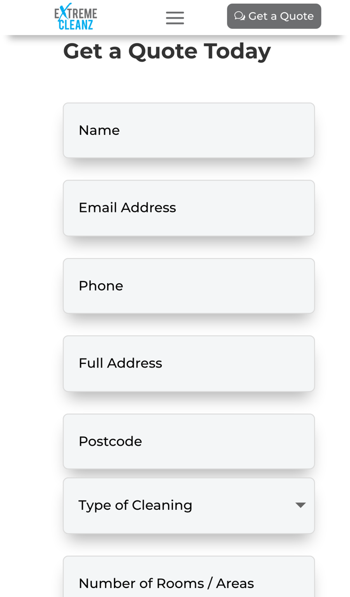

ExtremeCleanz: from quote request to booked clean, faster
I went through your website on a phone, the way someone with a stained carpet or sofa would, and read your quote form, FAQs and areas covered. Your site answers the big questions well. Where I think you'd win more bookings, and save time, is what happens after someone presses Submit.
What's already working
Three things I'd change
Give a guide price straight away
Your quote form already asks for "Type of Cleaning" and "Number of Rooms / Areas", but nothing on the site gives a price or a free date. Your services page says "Schedule an appointment or get in touch for an estimate".

People often ask more than one cleaner for a price. Until they hear back nothing is booked, and whoever answers first tends to get the job.
- The form they already fill in (type of cleaning, rooms, postcode) works out a guide price from your own prices.
- They see it straight away and pick a free day from your diary.
- You get the booking with the address, rooms and parking already filled in, ready to confirm.
Text back the calls you miss mid-clean
Your one number is a mobile, 07873 751 919, and the business is "owner-operator-run" by you.
With the machine running in someone's living room, a ringing phone can't be answered, and the caller may simply try the next cleaner.
- A missed call gets a text back within a minute: sorry I missed you, I'm on a job.
- The text links to your quote form, so they can get a guide price and pick a day.
- At the end of the day you see every missed caller in one list, with what they wanted.
Remind customers when it's time again
Your own FAQ says carpets need cleaning "every six months to a year", and your areas page offers "regular carpet cleaning services". Nothing on the site keeps in touch once the job is done.
Every happy customer is a likely repeat booking. A reminder at the right time brings them back without you having to chase.
- The day after the clean, a thank-you text goes out with a link to leave a Trustpilot review.
- Six months later, a reminder says it's time again, with a link to book.
- They pick a date, and you see the repeat bookings coming in without making a call.
Your website, answering for you
An assistant that answers the questions you get asked again and again, at any hour. These answers come only from your own website: your FAQs, your upholstery page and the areas you cover.
Anything it can't answer, it passes to you with the customer's details.
What happens next
For five local businesses I'm setting up one of these for free, in return for an honest review. Pick whichever would help most.
I'm Tom Williams and I run Tomoni-AI. If a 20-minute chat would help, reply to my email or give me a ring.
Call 07971 512158Email Tom